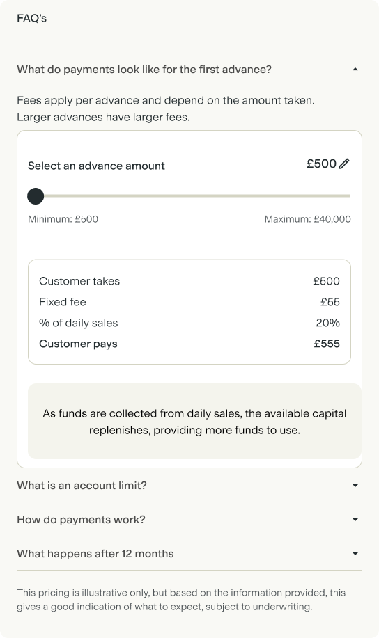
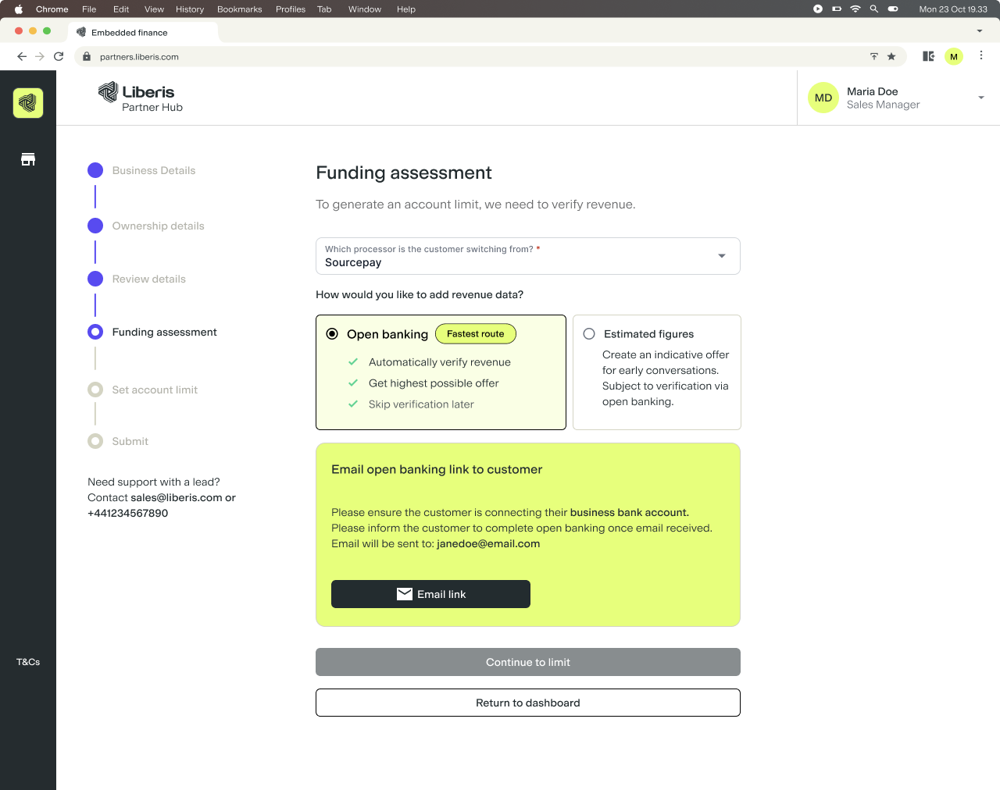
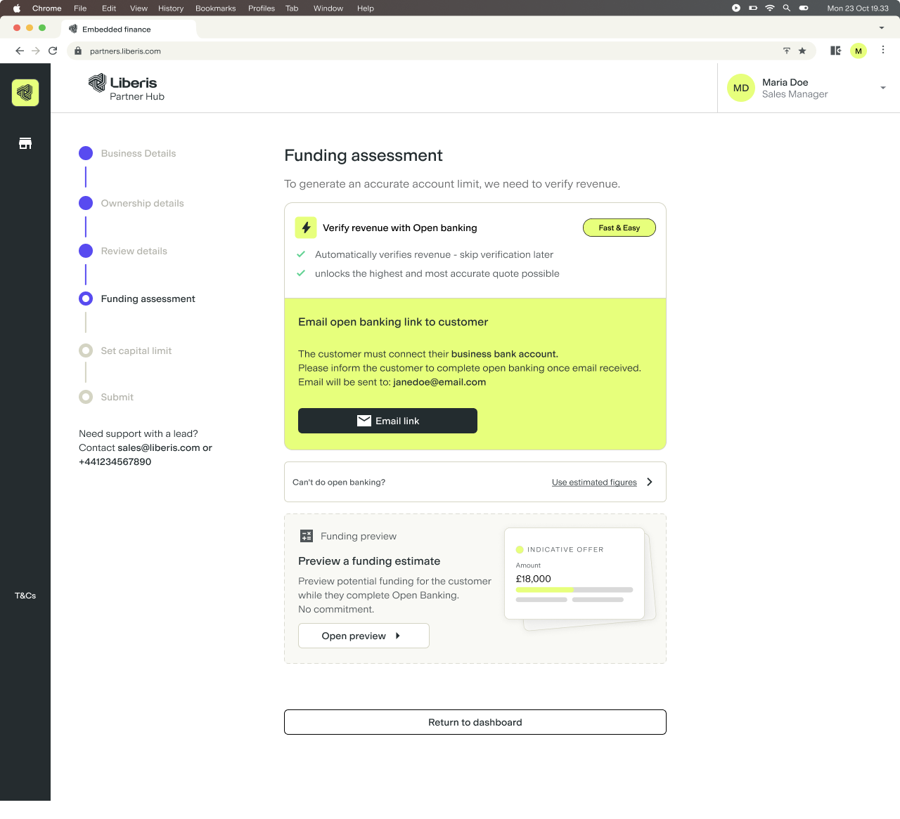
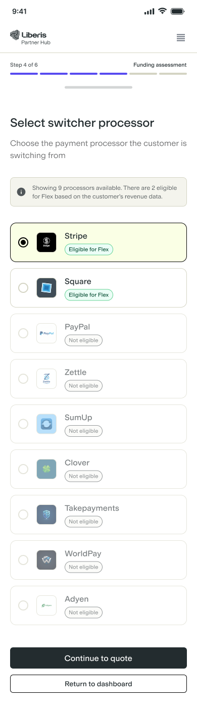

Product Designer & Researcher. Owned the journey design and ran the partner-agent testing.
Team
PMEngineersPartner ManagersPartner Sales Agents
Timeline
2026 Q1–Q3
The problem
Flex was a new funding product with no existing Partner Hub pattern to reuse. Partner agents had to create a merchant's account, assess them, generate a reusable limit and take a first advance — live, in one conversation, with dependencies on merchant data, payment processors and eligibility rules at every step.
The process
I mapped merchant, agent and system actions across the whole journey before designing a single screen. That made the dependencies visible: where an agent could move independently, where the merchant had to act, and where a system status needed explaining.
After launch I ran moderated sessions with partner sales agents on a clickable prototype — recruiting, moderating and synthesising them myself — to see how the journey actually held up in a live sales conversation.
The key move
I made progress and status explicit across the journey, and separated the Flex limit from the first drawdown so each read as its own commitment rather than one long form. I also designed an interactive calculator so agents could explain what an advance actually costs, mid-conversation.

What I learned
Shipping wasn't the finish line. Moderated testing after launch showed the assessment step was the weak point: Open Banking needed to be the obvious route to an accurate limit, and agents needed a lighter way to talk numbers before asking a merchant to commit. The strongest decisions came from watching real use, not from getting it right first time.

Before — every route had equal weight.

After — Open Banking made the clear primary route.
Designed the end-to-end Flex journey in Partner Hub, from account creation to first drawdown, then redesigned the funding assessment using real partner feedback.
My role
Product Designer & Researcher. Owned the journey design and ran the partner-agent testing.
Team
PMEngineersPartner ManagersPartner Sales Agents
Timeline
2026 Q1–Q3
Overview
Flex introduced a new way for merchants to access funding through a reusable limit, rather than a single fixed advance. Partner agents needed to carry a merchant through four dependent stages inside Partner Hub, in one live conversation: create the merchant's account, complete the funding assessment, establish the reusable Flex limit, then take the first drawdown on the merchant's behalf.
How might we help partner agents set up, assess and activate a new Flex account on behalf of a merchant without losing clarity across a long, dependent journey?
I owned the journey end to end — mapping the agent flow, defining the information hierarchy and status model, designing the detailed screens and edge cases, then returning after launch to redesign based on live feedback.
WHY IT WAS HARD
The journey crossed account creation, funding assessment, limit generation and drawdown, each with its own dependencies on merchant data, processors and eligibility rules. It had to feel efficient for agents mid-conversation, and safe for Liberis when evidence was missing.
Mapping the journey
Because Flex was a new product, there was no established Partner Hub pattern to reuse. I began by mapping merchant, agent and system actions across the whole journey, before touching a single screen. That made the dependencies visible: where an agent could progress independently, where merchant participation was required, and where a system status needed explaining.
The agent can drop off once the Open Banking link is sent, and is notified to return once the merchant connects their bank account.
Helping agents explain the first advance
The first advance wasn't simply an amount-selection step. Agents needed to explain what taking funding would mean for the merchant, mid-conversation. I designed an interactive calculator that let agents explore an advance amount and immediately see the corresponding fixed fee, percentage of daily sales and total repayment.
Moving the slider updates the fee, the daily-sales percentage and the total repayment together, so an agent can talk through a real scenario live.
Two decisions shaped how the rest of the journey worked. Making progress and status explicit: the journey contained steps that couldn't always be completed in one sitting, so I designed the experience so agents could see what was done, what was blocking progress, and what to do next — an application was never a pile of disconnected forms. Separating limit setup from first drawdown: a Flex limit and an advance taken from it are related but aren't the same commitment, so I structured the journey so the agent understood the available limit, reviewed the chosen advance, and completed the first drawdown as its own distinct step — a pattern that scales to future drawdowns too.
Testing it with real agents
I ran moderated sessions with partner sales agents on a clickable prototype. Each session paired a scenario-based walkthrough — "you're on a call with a merchant who wants funding now" — with think-aloud observation, then an interview about how they actually sell in the field. I recruited, moderated and synthesised these myself.
The most useful findings weren't about the interface at all.
Agents were afraid to start the journey. Several avoided opening an application in front of a merchant, worried about committing someone who wasn't ready and triggering automated contact they couldn't control. One asked for a sandbox to practise in first. That reframed the problem: the barrier wasn't comprehension, it was confidence in a high-pressure moment.
Preparation was being punished. Agents routinely pre-filled what they already knew before meeting a merchant, to save that merchant's time. But saving and closing late in the flow made the offers unretrievable for a period, forcing a restart — the single biggest blocker raised, and a direct consequence of a behaviour the design hadn't accounted for.
The revenue question was ambiguous. Agents couldn't tell whether it meant card turnover or total revenue, gross or net, exact or estimate — and merchants switching processors rarely had the figure to hand. It needed clearer copy and an explicit tolerance so agents could reassure merchants that an approximate answer was fine.
"If I'm with a client and I say now it's a credit search, they will say no, I don't want to do that."
That last one mattered most. A check early in the conversation stopped the conversation dead — which is exactly why Open Banking needed to become the primary, better-explained route rather than one option among several.
Synthesised from moderated partner-agent sessions and post-launch feedback. Participant names, prototype access and commercially sensitive detail have been withheld.
Evolving the funding assessment
The original assessment treated different funding routes with similar visual weight. Feedback showed that Open Banking needed to become the clearest route to an accurate limit, while estimates served a different purpose: helping agents begin a funding conversation when verified information wasn't yet available.
Every route had equal visual weight, so the preferred path wasn't clear.
Open Banking made primary, with estimates and processor choice as distinct steps.
Three specific shifts came out of that feedback. Open Banking became the primary route, positioning the evidence-based assessment more prominently. Estimates became a distinct tool, separating indicative conversations from the route used to establish an accurate Flex limit. Processor selection became intentional, moved into its own step that only surfaces processors associated with the merchant.

Processor choice moved into its own dedicated step, showing only processors associated with the merchant.
Outcome
The MVP established an end-to-end Flex journey in Partner Hub, allowing partner agents to move merchants from account creation through to establishing a Flex limit and taking their first advance. Following launch, I used partner feedback and testing to redesign a critical part of the journey: making Open Banking clearer, reducing processor-selection errors and giving agents a more appropriate way to explore indicative funding with merchants.
RESULT
A shipped 0-to-1 journey used by partner agents in production, plus a redesign of the assessment experience grounded in real usage rather than assumptions made before launch.
Reflection
An indicative conversation, an evidence-based assessment and a committed drawdown serve different needs and shouldn't be presented as interchangeable routes. Separating levels of certainty is a design decision, not a detail.
The bigger lesson was about timing: the redesign was stronger because it responded to observed agent behaviour, not assumptions made before launch. The clearest example was the sandbox — agents asked for somewhere to practise the journey before running it live in front of a merchant, and that need was invisible until I watched them hesitate. With more time I'd build a lighter feedback loop into future 0-to-1 launches so that kind of insight surfaces in weeks, not after months in production.